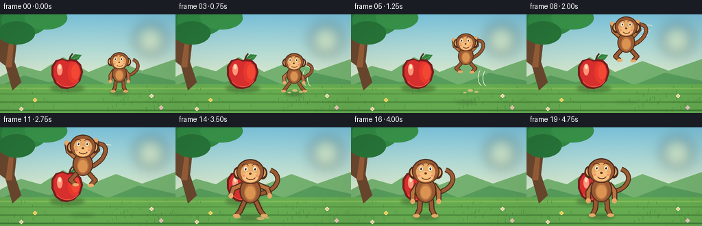
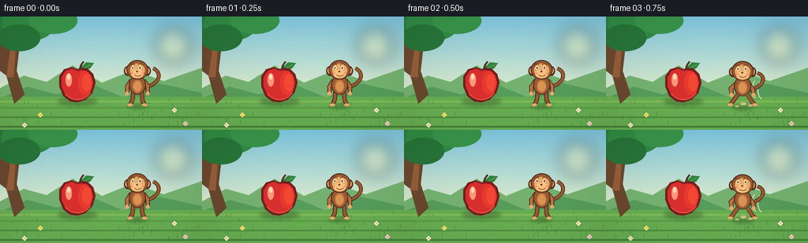

CODING AGENTS AS PIXEL WORLD MODELS
traex/GPT-5.6-Sol · dynamic_spatial_relationship_0059
点击播放 · 原生 RGB 像素
逐轮保存的候选
回放视频、检查图与代码变化。
每份候选均可单独播放。实际图片检查记录在下方工具轨迹中。
候选 01播放与检查图
点击播放 · 原生 RGB 像素


展开代码变化
--- 上一保存版本
+++ 本次保存版本
@@ -0,0 +1,324 @@
+from pathlib import Path
+import math
+
+import numpy as np
+from PIL import Image, ImageDraw, ImageFilter
+
+import artifact_io
+
+
+W, H, N = 256, 144, 20
+SS = 4
+
+
+def sc(v):
+ return int(round(v * SS))
+
+
+def box(coords):
+ return tuple(sc(v) for v in coords)
+
+
+def pts(points):
+ return [(sc(x), sc(y)) for x, y in points]
+
+
+def bezier(p0, p1, p2, p3, steps=30):
+ out = []
+ for i in range(steps + 1):
+ t = i / steps
+ u = 1.0 - t
+ x = u**3*p0[0] + 3*u*u*t*p1[0] + 3*u*t*t*p2[0] + t**3*p3[0]
+ y = u**3*p0[1] + 3*u*u*t*p1[1] + 3*u*t*t*p2[1] + t**3*p3[1]
+ out.append((x, y))
+ return out
+
+
+def smoothstep(t):
+ return t * t * (3 - 2 * t)
+
+
+def background(frame):
+ # A calm, warm orchard clearing with a gently graded sky.
+ yy = np.arange(H * SS, dtype=np.float32)[:, None]
+ sky_top = np.array([122, 198, 229], dtype=np.float32)
+ sky_low = np.array([226, 239, 207], dtype=np.float32)
+ mix = np.clip(yy / sc(104), 0, 1)[..., None]
+ arr = sky_top[None, None, :] * (1 - mix) + sky_low[None, None, :] * mix
+ arr = np.repeat(arr, W * SS, axis=1).astype(np.uint8)
+ im = Image.fromarray(arr, "RGB")
+ d = ImageDraw.Draw(im)
+
+ # Sun glow, distant hills, and layered meadow.
+ glow = Image.new("RGBA", im.size, (0, 0, 0, 0))
+ gd = ImageDraw.Draw(glow)
+ gd.ellipse(box((197, 14, 242, 59)), fill=(255, 247, 178, 95))
+ glow = glow.filter(ImageFilter.GaussianBlur(sc(9)))
+ im = Image.alpha_composite(im.convert("RGBA"), glow).convert("RGB")
+ d = ImageDraw.Draw(im)
+ d.polygon(pts([(0, 91), (30, 75), (59, 83), (92, 62), (129, 84),
+ (169, 68), (207, 82), (256, 65), (256, 114), (0, 114)]),
+ fill=(114, 178, 116))
+ d.polygon(pts([(0, 104), (35, 89), (72, 99), (112, 84), (157, 103),
+ (202, 85), (256, 97), (256, 122), (0, 122)]),
+ fill=(85, 157, 94))
+ d.rectangle(box((0, 102, 256, 144)), fill=(101, 174, 84))
+
+ # Horizontal grass texture creates perspective without adding competing objects.
+ for y, color in [(107, (127, 188, 91)), (115, (91, 157, 72)),
+ (127, (78, 145, 65)), (139, (65, 129, 58))]:
+ d.rectangle(box((0, y, 256, y + 2)), fill=color)
+ rng = np.random.default_rng(9081)
+ for j in range(54):
+ x = float(rng.uniform(2, 254))
+ y = float(rng.uniform(106, 143))
+ h = float(rng.uniform(2, 7)) * (0.45 + (y - 104) / 60)
+ sway = math.sin(frame * .25 + j * 1.7) * .45
+ color = (59, 126 + j % 16, 57)
+ d.line(pts([(x, y), (x + sway, y - h)]), fill=color, width=sc(.55))
+
+ # Framing tree at the edge, intentionally fruitless so the hero apple stays unique.
+ d.polygon(pts([(0, 12), (16, 8), (25, 34), (21, 69), (31, 99),
+ (18, 111), (8, 75), (0, 69)]), fill=(104, 72, 48))
+ d.polygon(pts([(8, 77), (14, 35), (20, 37), (17, 77)]), fill=(147, 94, 58))
+ d.line(pts([(15, 38), (43, 18), (67, 17)]), fill=(94, 66, 45), width=sc(7))
+ for cx, cy, rx, ry, c in [
+ (7, 8, 29, 20, (43, 124, 65)), (36, 9, 34, 22, (48, 139, 70)),
+ (67, 5, 31, 17, (55, 148, 76)), (24, 27, 27, 17, (38, 117, 58))]:
+ d.ellipse(box((cx-rx, cy-ry, cx+rx, cy+ry)), fill=c)
+
+ # Tiny flowers provide scale and polish.
+ for x, y, col in [(51, 125, (250, 229, 113)), (221, 119, (244, 239, 215)),
+ (235, 136, (245, 205, 219)), (31, 138, (245, 239, 215))]:
+ d.line(pts([(x, y+4), (x, y)]), fill=(47, 115, 48), width=sc(.7))
+ for a in range(0, 360, 90):
+ dx, dy = math.cos(math.radians(a))*1.7, math.sin(math.radians(a))*1.7
+ d.ellipse(box((x+dx-1.2, y+dy-1.2, x+dx+1.2, y+dy+1.2)), fill=col)
+ d.ellipse(box((x-.8, y-.8, x+.8, y+.8)), fill=(238, 171, 57))
+ return im
+
+
+def add_shadow(im, cx, cy, rx, ry, opacity=90):
+ layer = Image.new("RGBA", im.size, (0, 0, 0, 0))
+ ld = ImageDraw.Draw(layer)
+ ld.ellipse(box((cx-rx, cy-ry, cx+rx, cy+ry)), fill=(37, 65, 30, opacity))
+ layer = layer.filter(ImageFilter.GaussianBlur(sc(2.3)))
+ return Image.alpha_composite(im.convert("RGBA"), layer).convert("RGB")
+
+
+def draw_apple(im, frame):
+ cx, cy = 98, 86
+ im = add_shadow(im, cx, 108, 25, 5, 88)
+ d = ImageDraw.Draw(im)
+
+ # Stem and leaf sit behind the fruit.
+ d.line(pts([(100, 70), (103, 61), (106, 57)]), fill=(79, 53, 31), width=sc(2.6))
+ leaf = [(103, 64), (109, 58), (119, 59), (114, 66), (105, 68)]
+ d.polygon(pts(leaf), fill=(49, 132, 66))
+ d.line(pts([(105, 66), (115, 61)]), fill=(117, 180, 94), width=sc(.8))
+
+ # Lobed apple silhouette with a dark rim and layered red volume.
+ contour = [(98, 67), (91, 64), (81, 67), (75, 76), (75, 89),
+ (80, 101), (89, 108), (98, 109), (108, 106), (117, 97),
+ (121, 84), (118, 73), (111, 66), (103, 65)]
+ d.polygon(pts(contour), fill=(116, 30, 32))
+ inner = [(98, 69), (91, 66), (83, 69), (78, 77), (78, 89),
+ (83, 100), (91, 105), (99, 106), (108, 103), (115, 95),
+ (118, 84), (115, 74), (108, 69), (103, 68)]
+ d.polygon(pts(inner), fill=(211, 48, 47))
+ d.ellipse(box((99, 69, 116, 100)), fill=(228, 57, 48))
+ d.ellipse(box((104, 73, 116, 95)), fill=(237, 72, 53))
+ d.ellipse(box((83, 72, 91, 89)), fill=(255, 151, 126))
+ d.ellipse(box((85, 73, 89, 80)), fill=(255, 220, 192))
+ d.arc(box((79, 70, 117, 106)), start=28, end=145, fill=(244, 96, 74), width=sc(1))
+ return im
+
+
+def local(x, y, scale, ox, oy):
+ return ox + x * scale, oy + y * scale
+
+
+def draw_monkey(im, ox, oy, scale, pose, face_front, blink=False):
+ """Draw a charming monkey anchored at the midpoint between its feet."""
+ d = ImageDraw.Draw(im)
+ dark = (77, 46, 32)
+ fur_dark = (116, 68, 42)
+ fur = (151, 91, 52)
+ fur_light = (181, 116, 66)
+ skin = (228, 172, 108)
+ skin_hi = (243, 194, 129)
+
+ def P(x, y):
+ return local(x, y, scale, ox, oy)
+
+ def B(x0, y0, x1, y1):
+ a = P(x0, y0); b = P(x1, y1)
+ return box((a[0], a[1], b[0], b[1]))
+
+ def line(path, color, width, joint=True):
+ q = [P(x, y) for x, y in path]
+ d.line(pts(q), fill=color, width=max(1, sc(width * scale)), joint="curve")
+ if joint and len(q) > 2:
+ r = width * scale / 2
+ for x, y in q[1:-1]:
+ d.ellipse(box((x-r, y-r, x+r, y+r)), fill=color)
+
+ # Curled tail, always behind body, changes with the leap.
+ if pose == "air":
+ tail_curve = bezier(P(10, -30), P(36, -41), P(38, -65), P(18, -62), 28)
+ elif pose == "crouch":
+ tail_curve = bezier(P(10, -27), P(37, -34), P(39, -51), P(24, -55), 28)
+ else:
+ tail_curve = bezier(P(10, -30), P(38, -34), P(42, -55), P(26, -61), 30)
+ d.line(pts(tail_curve), fill=dark, width=max(1, sc(6.5 * scale)), joint="curve")
+ d.line(pts(tail_curve), fill=fur, width=max(1, sc(4.2 * scale)), joint="curve")
+
+ # Pose-specific arms and legs, outlined then filled.
+ if pose == "air":
+ left_arm = [(-9, -42), (-20, -52), (-22, -64)]
+ right_arm = [(9, -42), (20, -54), (18, -67)]
+ left_leg = [(-8, -22), (-17, -12), (-10, -6)]
+ right_leg = [(8, -22), (17, -12), (11, -5)]
+ elif pose == "crouch":
+ left_arm = [(-10, -39), (-19, -30), (-18, -20)]
+ right_arm = [(10, -39), (17, -28), (18, -20)]
+ left_leg = [(-8, -20), (-16, -9), (-20, -4)]
+ right_leg = [(8, -20), (15, -9), (20, -4)]
+ elif pose == "land":
+ left_arm = [(-10, -42), (-22, -37), (-25, -28)]
+ right_arm = [(10, -42), (22, -37), (25, -28)]
+ left_leg = [(-7, -21), (-13, -8), (-18, -2)]
+ right_leg = [(7, -21), (13, -8), (18, -2)]
+ else:
+ left_arm = [(-10, -42), (-17, -31), (-17, -20)]
+ right_arm = [(10, -42), (17, -32), (17, -20)]
+ left_leg = [(-7, -22), (-8, -9), (-12, -1)]
+ right_leg = [(7, -22), (8, -9), (12, -1)]
+
+ for limb in [left_leg, right_leg, left_arm, right_arm]:
+ line(limb, dark, 7.2)
+ line(limb, fur_light if limb in [left_arm, right_arm] else fur, 4.7)
+
+ # Hands, feet, torso and warm belly.
+ for limb in [left_arm, right_arm]:
+ x, y = limb[-1]
+ d.ellipse(B(x-3.2, y-3, x+3.2, y+3.6), fill=skin)
+ for limb in [left_leg, right_leg]:
+ x, y = limb[-1]
+ d.ellipse(B(x-4.4, y-2.2, x+4.4, y+2.4), fill=skin)
+
+ d.ellipse(B(-14, -50, 14, -18), fill=dark)
+ d.ellipse(B(-12.5, -49, 12.5, -19), fill=fur)
+ d.ellipse(B(-8, -43, 8, -21), fill=fur_light)
+ d.ellipse(B(-6.5, -40, 6.5, -23), fill=(215, 148, 84))
+
+ # Ears precede the head so their rims remain natural.
+ d.ellipse(B(-22, -65, -10, -49), fill=dark)
+ d.ellipse(B(10, -65, 22, -49), fill=dark)
+ d.ellipse(B(-20, -63, -11, -52), fill=skin)
+ d.ellipse(B(11, -63, 20, -52), fill=skin)
+ d.ellipse(B(-18, -75, 18, -43), fill=dark)
+ d.ellipse(B(-16.5, -73.5, 16.5, -44), fill=fur)
+
+ # Face mask, muzzle, eyes, brows and friendly smile.
+ d.ellipse(B(-12.5, -69, 12.5, -47), fill=skin)
+ d.ellipse(B(-10.5, -59, 10.5, -45), fill=skin_hi)
+ eye_shift = 0 if face_front else -1.7
+ if blink:
+ d.arc(B(-10+eye_shift, -66, -2+eye_shift, -58), 5, 175, fill=dark, width=max(1, sc(1.5*scale)))
+ d.arc(B(2+eye_shift, -66, 10+eye_shift, -58), 5, 175, fill=dark, width=max(1, sc(1.5*scale)))
+ else:
+ for ex in (-6 + eye_shift, 6 + eye_shift):
+ d.ellipse(B(ex-2.2, -65.2, ex+2.2, -59.2), fill=(255, 252, 229))
+ d.ellipse(B(ex-.9, -63.8, ex+1.0, -60.5), fill=(38, 30, 26))
+ d.ellipse(B(ex-.45, -63.4, ex+.1, -62.7), fill=(255, 255, 255))
+ d.arc(B(-11+eye_shift, -69, -2+eye_shift, -62), 190, 340, fill=(89, 49, 30), width=max(1, sc(.9*scale)))
+ d.arc(B(2+eye_shift, -69, 11+eye_shift, -62), 200, 350, fill=(89, 49, 30), width=max(1, sc(.9*scale)))
+ d.ellipse(B(-1.6+eye_shift*.3, -57.5, 1.6+eye_shift*.3, -54.8), fill=(100, 55, 37))
+ d.arc(B(-6, -57, 7, -48), 20, 155, fill=(107, 52, 39), width=max(1, sc(1.1*scale)))
+ d.ellipse(B(-10, -55, -7, -52), fill=(237, 143, 116))
+ d.ellipse(B(7, -55, 10, -52), fill=(237, 143, 116))
+
+
+def motion_marks(im, frame, ox, oy, scale, phase):
+ d = ImageDraw.Draw(im)
+ if phase == "takeoff":
+ # Small grass/dust puffs where the monkey launched.
+ for x, y, r in [(174, 111, 4), (183, 113, 3), (166, 114, 2.5)]:
+ d.ellipse(box((x-r, y-r*.45, x+r, y+r*.45)), fill=(205, 193, 129))
+ for off in (0, 7):
+ d.arc(box((185+off, 80+off*.15, 197+off, 104+off*.15)), 100, 240,
+ fill=(243, 246, 219), width=sc(1))
+ elif phase == "air":
+ # Sparse speed strokes emphasize the readable jump arc.
+ for k in range(3):
+ y = oy - (46 + k*8)*scale
+ x0 = ox + (22 + k*3)*scale
+ d.arc(box((x0, y, x0+12, y+5)), 160, 350, fill=(236, 243, 214), width=sc(1))
+ elif phase == "landing":
+ for x, y, r in [(90, 131, 5), (124, 133, 6), (134, 132, 3)]:
+ d.ellipse(box((x-r, y-r*.35, x+r, y+r*.35)), fill=(194, 181, 114))
+
+
+def render_frame(i):
+ im = background(i)
+ im = draw_apple(im, i)
+
+ # Timing: establish relation, anticipation, airborne transfer, then settle in foreground.
+ if i <= 2:
+ ox = 174 + math.sin(i * .8) * .35
+ oy, scale, pose, phase = 113, .77, "stand", "none"
+ face_front = False
+ elif i == 3:
+ ox, oy, scale, pose, phase = 173, 115, .78, "crouch", "takeoff"
+ face_front = False
+ elif i <= 13:
+ t = (i - 3) / 11.0
+ e = smoothstep(t)
+ ox = 173 + (109 - 173) * e
+ ground_y = 113 + (129 - 113) * e
+ oy = ground_y - 48 * math.sin(math.pi * t)
+ scale = .78 + (1.12 - .78) * e
+ pose, phase = "air", ("takeoff" if i <= 5 else "air")
+ face_front = t > .44
+ elif i == 14:
+ ox, oy, scale, pose, phase = 109, 131, 1.13, "land", "landing"
+ face_front = True
+ elif i == 15:
+ ox, oy, scale, pose, phase = 109, 128.5, 1.12, "land", "landing"
+ face_front = True
+ else:
+ settle = math.exp(-(i-16)*.8) * math.cos((i-16)*2.2)
+ ox = 109 + math.sin(i*.7)*.18
+ oy = 129 + settle * 1.0
+ scale, pose, phase = 1.12, "stand", "none"
+ face_front = True
+
+ # A contact shadow that shrinks and softens while airborne gives explicit height/depth.
+ if 4 <= i <= 13:
+ altitude = max(0.0, 113 - oy)
+ sh = max(.28, 1 - altitude / 64)
+ im = add_shadow(im, ox, 128, 17*scale*(1.15-sh*.2), 3.2*sh, int(55*sh+18))
+ else:
+ im = add_shadow(im, ox, min(132, oy+1), 17*scale, 3.5*scale, 80)
+
+ motion_marks(im, i, ox, oy, scale, phase)
+ draw_monkey(im, ox, oy, scale, pose, face_front, blink=(i == 18))
+
+ # Subtle foreground vignette and warm cinematic grade.
+ arr = np.asarray(im.resize((W, H), Image.Resampling.LANCZOS)).astype(np.float32)
+ Y, X = np.mgrid[0:H, 0:W]
+ vignette = 1.0 - 0.08 * np.clip(((X-W/2)/(W*.7))**2 + ((Y-H/2)/(H*.75))**2, 0, 1)
+ arr *= vignette[..., None]
+ arr[..., 0] *= 1.025
+ arr[..., 2] *= .975
+ return np.clip(arr, 0, 255).astype(np.uint8)
+
+
+def main():
+ frames = np.stack([render_frame(i) for i in range(N)], axis=0)
+ artifact_io.save(frames, Path(__file__).resolve().parent)
+
+
+if __name__ == "__main__":
+ main()
可观测工具轨迹
实际执行的命令与返回图片。
命令 1exit 0
/bin/bash -lc "cat prompt.txt && printf '\\n---RULES---\\n' && cat GENERATION_RULES.md && printf '\\n---SPEC---\\n' && cat task_spec.json"
命令 2exit 0
/bin/bash -lc "find . -maxdepth 2 -type f -printf '%p\\n' | sort"
命令 3exit 0
/bin/bash -lc "which ffmpeg || true; which python3 || true; python3 - <<'PY' mods=['PIL','numpy','cv2','imageio'] for m in mods: try: x=__import__(m); print(m,'OK',getattr(x,'__version__','')) except Exception as e: print(m,'NO',e) PY"
命令 4exit 0
/bin/bash -lc 'cat artifact_io.py'
命令 5exit 0
/bin/bash -lc 'python3 generate.py'
命令 6exit 0
/bin/bash -lc "python3 - <<'PY'
from PIL import Image
im=Image.open('inspection.png')
print(im.size)
# crop just frames without headers into smaller montage maybe report colors
import numpy as np
x=np.load('pixels.npz')['pixels']
print(x.shape,x.dtype,'unique frame pixels', [len(np.unique(x[:,:,i])) for i in [0,3,7,10,13,19]])
PY"命令 7exit 0
/bin/bash -lc "python3 - <<'PY'
from PIL import Image
import numpy as np
for i in [0,2,3,5,7,9,11,13,14,16,19]:
a=np.array(Image.open(f'frames/{i:02}.png'))
# monkey fur-ish (brown, exclude dark green); only x>65
Y,X=np.mgrid[:144,:256]
m=(X>65)&(a[:,:,0]>90)&(a[:,:,0]>a[:,:,1]*1.22)&(a[:,:,1]>35)&(a[:,:,1]<180)&(a[:,:,2]<125)
ys,xs=np.where(m)
red=(a[:,:,0]>150)&(a[:,:,0]>a[:,:,1]*2.1)&(X>65)&(X<130)
print(f'{i:02}: brown centroid ({xs.mean():.1f},{ys.mean():.1f}), bounds {xs.min()}..{xs.max()}/{ys.min()}..{ys.max()}, redpx {red.sum()}')
PY
ls -lh pixels.npz inspection.png index.html frames/00.png frames/19.png"保存候选 1 份；完成命令 7 次；可验证图片返回 0 张。原始 API 响应与完整日志保留在本地。